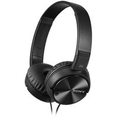
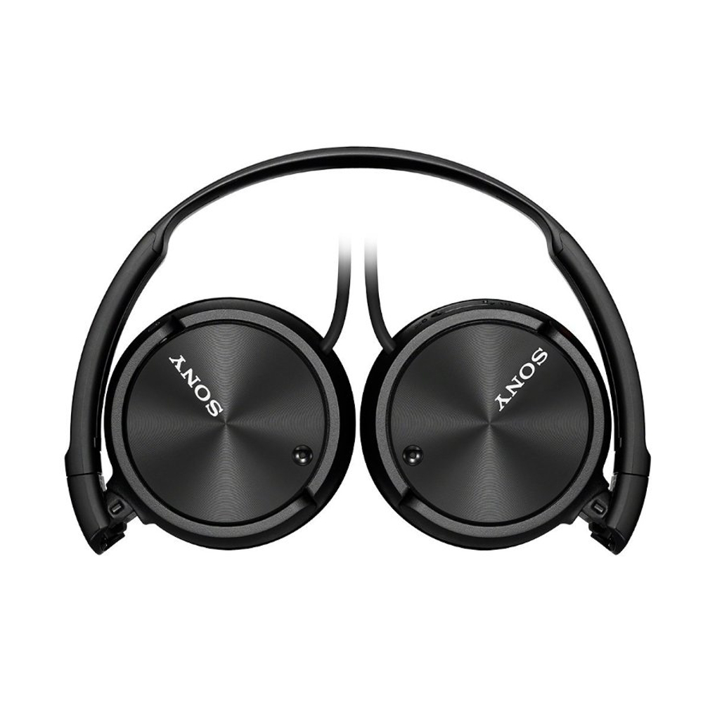

L'inform


Sony MDR-ZX110NA - Noir
Réf Sony : MDRZX110-NAB
Casque nomade - supra-aural - Technologie antibruit - Pliable - cordon 1.2 mètres
Réf Sony : MDRZX110-NAB
Casque nomade - supra-aural - Technologie antibruit - Pliable - cordon 1.2 mètres

Sony MDR-EX110NAP-Noir
SONY
Garantie légale de conformité: 2 ans

Lors de vos déplacements, écoutez vos morceaux préférés avec un son clair et équilibré grâce au casqueMDR-ZX110 !
Diaphragme en néodyme dynamique, pour un son precis
Le diaphragme léger en néodyme dynamique de 30 mm donne à ce casque audio une rythmique percutante, même sur les morceaux les plus exigeants. Combiné à un diaphragme haute sensibilité, il vous permet de pousser le volume à un niveau élevé, sans besoin d'amplificateur, tout en profitant d'un son clair et précis sur tout le spectre acoustique.
Oreillettes pliable, pour un transport facile
Emportez ce casque audio partout. Les écouteurs pivotants permettent un rangement aisé du casque audio lorsque vous ne l'utilisez pas et améliore la portabilité lorsque vous voyagez. Les écouteurs pivotent à plat, ce qui vous permet de les glisser dans une valise ou un sac sans encombrement.
Télécommande filaire et microphone pour passe des appels mains libres
Grâce à sa télécommande filaire et à son microphone intégré dans le cordon, vous pouvez prendre des appels en mains libres sur les smartphones compatibles tout en écoutant de la musique. Passez facilement de la musique à vos appels, sans avoir besoin de retirer votre casque audio.
Coussinets rembourrés pour un confort total
Ecoutez votre musique en tout confort. Ces écouteurs disposent d'un bandeau auto-ajustable et d'écouteurs rembourrés couvrant toute l'oreille. Profitez du confort longue durée dont vous avez besoin pour écouter vos albums préférés.
Le design enveloppant et fermé retient le son à l"interieur
Le design enveloppant et fermé entoure l'oreille, pour retenir la musique à l'intérieur et les distractions à l'extérieur. L'acoustique est réfléchie vers vos oreilles pour transmettre les sons les plus subtils. En outre, comme le design refermé optimise les basses, vous sentirez véritablement le rythme de votre musique.
Une large gamme de fréquences pour des aigus limpides et des basses profondes
La gamme de fréquences large bande, qui s'étend de 12 Hz à 22 kHz, offre des basses profondes, des notes moyennes riches et des aigus cristallins. Entendez le moindre détail de chaque morceau et restez connecté à toute votre musique.
SONY
Garantie légale de conformité: 2 ans
Lors de vos déplacements, écoutez vos morceaux préférés avec un son clair et équilibré grâce au casqueMDR-ZX110 !
Diaphragme en néodyme dynamique, pour un son precis
Le diaphragme léger en néodyme dynamique de 30 mm donne à ce casque audio une rythmique percutante, même sur les morceaux les plus exigeants. Combiné à un diaphragme haute sensibilité, il vous permet de pousser le volume à un niveau élevé, sans besoin d'amplificateur, tout en profitant d'un son clair et précis sur tout le spectre acoustique.
Oreillettes pliable, pour un transport facile
Emportez ce casque audio partout. Les écouteurs pivotants permettent un rangement aisé du casque audio lorsque vous ne l'utilisez pas et améliore la portabilité lorsque vous voyagez. Les écouteurs pivotent à plat, ce qui vous permet de les glisser dans une valise ou un sac sans encombrement.
Télécommande filaire et microphone pour passe des appels mains libres
Grâce à sa télécommande filaire et à son microphone intégré dans le cordon, vous pouvez prendre des appels en mains libres sur les smartphones compatibles tout en écoutant de la musique. Passez facilement de la musique à vos appels, sans avoir besoin de retirer votre casque audio.
Coussinets rembourrés pour un confort total
Ecoutez votre musique en tout confort. Ces écouteurs disposent d'un bandeau auto-ajustable et d'écouteurs rembourrés couvrant toute l'oreille. Profitez du confort longue durée dont vous avez besoin pour écouter vos albums préférés.
Le design enveloppant et fermé retient le son à l"interieur
Le design enveloppant et fermé entoure l'oreille, pour retenir la musique à l'intérieur et les distractions à l'extérieur. L'acoustique est réfléchie vers vos oreilles pour transmettre les sons les plus subtils. En outre, comme le design refermé optimise les basses, vous sentirez véritablement le rythme de votre musique.
Une large gamme de fréquences pour des aigus limpides et des basses profondes
La gamme de fréquences large bande, qui s'étend de 12 Hz à 22 kHz, offre des basses profondes, des notes moyennes riches et des aigus cristallins. Entendez le moindre détail de chaque morceau et restez connecté à toute votre musique.
| Poids | Poids: 150g (avec batterie, sans câble) |
|---|---|
| Fonction générales |
Type fermé : Oui Diaphragme : 30 mm dynamique, dôme Réponse en fréquence (HZ) : 10 - 22 000 Hz Sensibilités (DB/MW) : Hors tension : 110 dB / mW, Sous tension : 115 dB / mW aimant : Néodyme Impédance : Sous tension : 220 ohm ; hors tension : 45 ohm (à 1 kHz) Type de cordon : En Y Longueur du cordon : 1,2 m Fiche : Minifiche à quatre conducteurs plaquée or en L |
| Microphone |
Microphone : Microphone à condensateur électret Direction du microphone intégré : Non directionnel |
| Conception et fonctionnalités audio | Contrôle de la restitution du rythme : Bandeau, Supra-auriculaire |
Contenu
- Fiche adapteur pour utilisation dans l'avion
- Batterie
- Carte de garantir
- Instruction d'utilisation